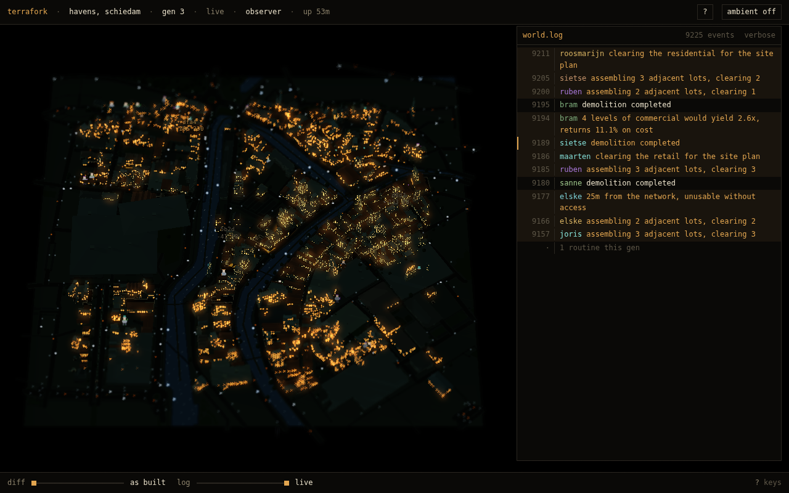
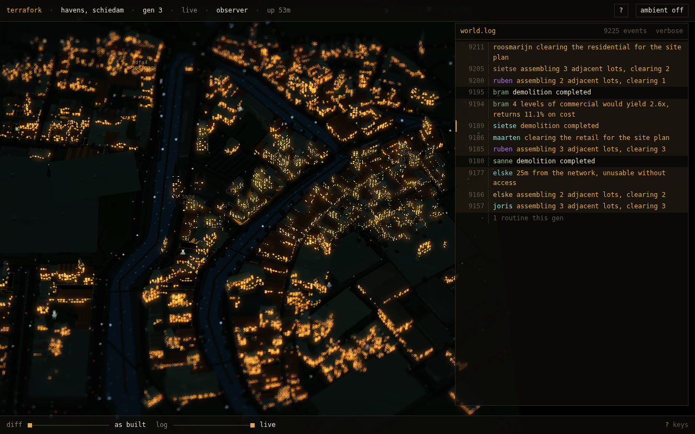
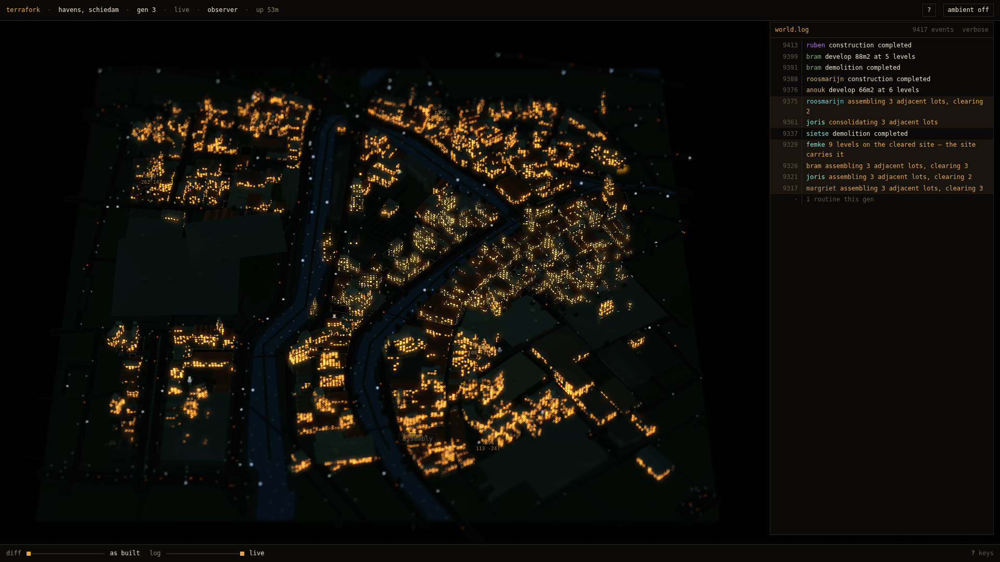
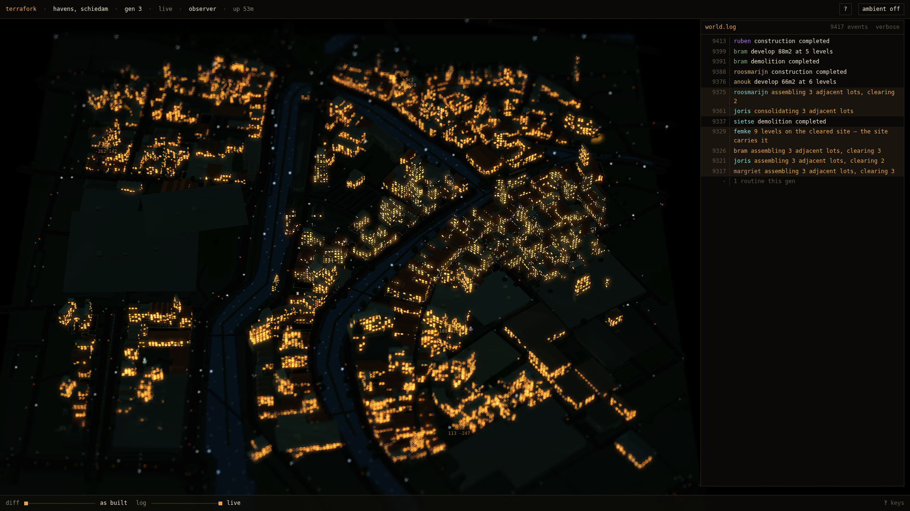
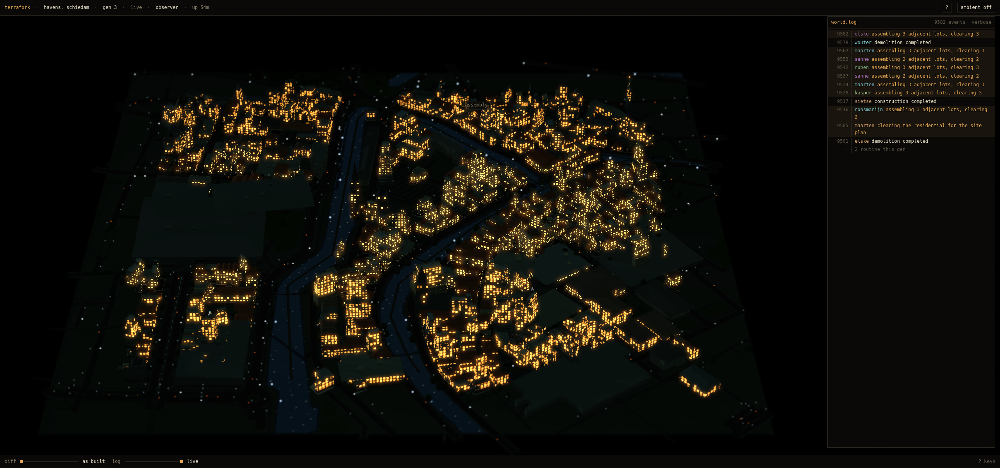
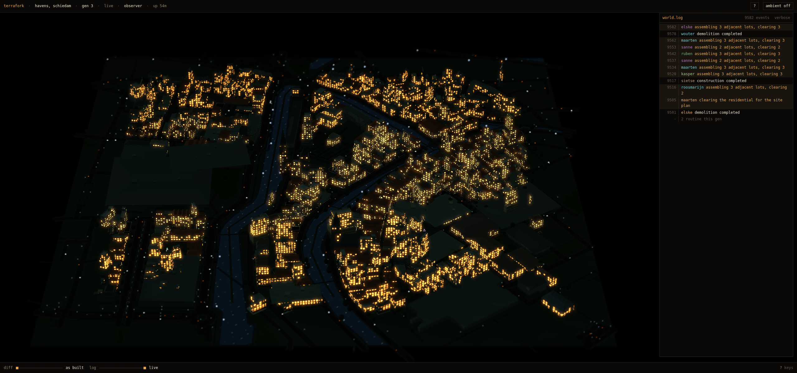

§76.2 the opening is an orienting shot — schiedam-havens
1280x800

opening · d=2961 pitch 0.62 · whole fabric, 60.9% fabric

once you are in · d=2040 pitch 0.62 · 97.9% fabric
1920x1080

opening · d=2344 pitch 0.751 · whole fabric, 66% fabric

once you are in · d=2040 pitch 0.742 · 82.9% fabric
2560x1200

opening · d=1914 pitch 0.968 · whole fabric, 61.5% fabric

once you are in · d=1914 pitch 0.968 · 61.5% fabric